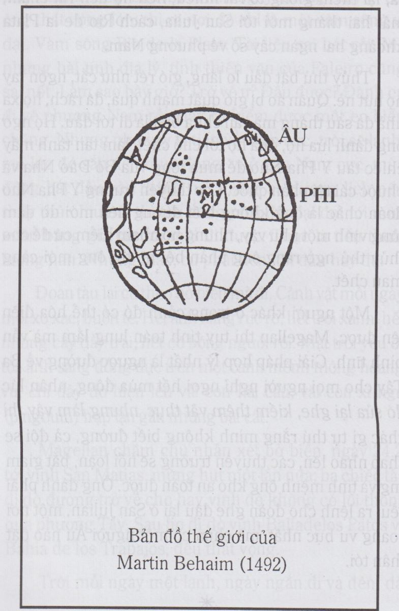
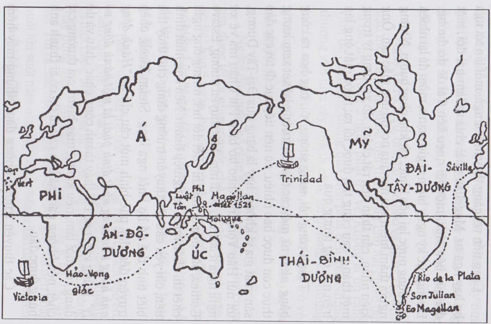

Mỗi lần mà một thế hệ cương quyết bắt tay vào việc thì vũ trụ phải thay đổi.
(Stefan Zweig)
Đọc những sách du lịch và thám hiểm trong ba chục năm gần đây, sao tôi thấy nhạt quá! Cuộc đi một mình vòng quanh thế giới trên một chiếc tàu buồm Alain Gerbault (từ 1923 đến 1929) (1) có vẻ như một cuộc dạo mát trên hồ Tây. Ngay như cuộc thám hiểm danh tiếng nhất mấy năm nay, cuộc chiến thắng ngọn núi Everest (2) cũng không làm cho tôi hồi hộp chút nào cả. Thám hiểm cái gì mà có bản đồ ghi đủ những chi tiết về miền mình sẽ tới, có thì giờ nghiên cứu kỹ bản đồ từ hai ba năm trước, họp nhau hằng chục người để thu thập mọi tài liệu về địa thế, thời tiết, đường giao thông, cách chuyên chở, phong tục, cảnh vật mỗi miền, rồi lập trước hai ba kế hoạch, tính trước mọi sự bất ngờ, báo tin trước để người ta tiếp đón, tới khi đi thì có cả hàng chục chiếc xe cam nhông chở đủ các dụng cụ máy móc, từ máy điện thoại, máy thâu thanh … đến bình dưỡng khí –tôi nói về cuộc leo núi Everest - ấy là chưa kể những thuốc bổ, thuốc bệnh, lều, nệm và hằng trăm vật thường dùng khác. Như vậy thì nằm ở đỉnh núi Everest hay giữa sa mạc Sahara có khác gì nằm trong một phòng ở khách sạn lớn ở Sài Gòn này không? Khoa học đã tặng loài người mọi tiện nghi, nhưng cũng làm cho loài người mất cái thú thám hiểm, mất cái hồi hộp tiến vào một miền bí mật, chưa ai biết, mất cái sợ hãi đứt liên lạc với xã hội, có thể chết đói, chết khát ở giữa cảnh hoang vu mà không ai hay [3]
Cho nên có đọc truyện thám hiểm thì chỉ nên đọc những truyện xảy ra từ thế kỷ thứ XVII trở về trước. Truyện thứ nhất có lẽ là truyện đi vòng quanh thế giới của Magellan
Từ hồi người La Mã đi chiếm thuộc địa và được nếm mùi các gia vị, được ngửi các hương sạ, hương hoa, được rờ những tấm lụa mượt và óng ánh của phương Đông thì người phương Tây mới thấy đời là thú. Trước kia, họ chỉ biết nếm món thịt bò thịt cừu chấm muối, bận đồ gai thô, và các bà hoàng của họ chỉ biết cài trên tóc những cánh hoa rừng, đẹp thì có đẹp nhưng ít thơm mà mau héo. Họ thích nhất những gia vị như đại hồi, tiểu hồi, quế, gừng, hồ tiêu, chanh. Những thứ này đều sản xuất ở Mã Lai, Ấn Độ, phải chở bằng ghe biển tới Ormuz trên vịnh Ba Tư, hoặc Aden trên Hồng Hải, rồi chở trên lưng lạc đà (có từng đoàn lạc đà hàng ngàn con chực sẵn ở những cảng đó) qua sa mạc tới Bagdad, Damas hay Caire; sau cùng lại chở bằng ghe biển tới Venise, Rialto. Ở đây người ta đem bán đấu giá, thương nhân nào trả giá cao nhất thì được vô kho lãnh hàng rồi dùng xe, vượt đèo vượt suối, đem về Pháp, Đức, Anh. Tính ra món hàng mất hai năm từ nơi sản xuất tới nơi tiêu thụ, qua tay ít nhất là mười lăm kẻ trung gian, hao hớt ít nhất là bốn phần năm, nếu không bị đắm, thì cũng bị cướp, cướp trên biển, cướp trên cạn, cướp bằng quyền thế và cướp bằng vũ lực vì các thương nhân phải đóng những thuế rất nặng cho các ông vua Ba Tư, Ai Cập, lại phải đóng những thuế “mãi lộ” cho các vị “hảo hán” nữa. Cho nên đồ gia vị ở phương Đông thì rẻ mạt mà tới phương Tây thì đắt như vàng. Thời Trung Cổ, hồ tiêu bán từng hạt một chứ không bán cân như ngày nay; người ta mua ruộng đất, mua chức tước có thể trả bằng hồ tiêu; và người nào trong nhà có được một bao hồ tiêu là vào hạng giàu lớn rồi. Từ ngữ “sac à poivre” (bao hồ tiêu) để chỉ hạng đại phú có từ thời đó.
Thấy những món hàng quý như vậy thành độc quyền của những người theo đạo Hồi, lại thấy vàng của mình vào tay họ hết, người phương Tây tất nhiên bất bình, họp nhau lại, đem quân qua chiếm miền Tây Á Trung Á mà họ gọi là miền Cận Đông, Trung Đông, do đó mà có chiến tranh Thập tự quân. Cũng có một số tín đồ chiến đấu vì Chúa, vì thánh địa, nhưng số đó bao giờ cũng bị một bọn đầu cơ lợi dụng, mà bọn này thì chỉ muốn mở đường qua Hồng Hải, vịnh Ba Tư rồi qua Ấn Độ để tha hồ chở gia vị mà khỏi phải trả thuế cho các ông vua theo đạo Hồi.
Những chiến tranh đó thất bại, người ta mới tìm con đường khác để qua Ấn Độ. Hồi đó người ta đã nghe rằng trái đất tròn, mà trái đất tròn thì từ châu Âu, người ta cứ đi hoài về phương Tây, tất sẽ có một ngày kia tới Ấn Độ được. Vì tin vậy năm 1493 Christophe Colomb tìm ra được châu Mỹ mà ông tưởng là Ấn Độ. Năm năm sau, Vasco de Gama, cũng ngờ rằng trái đất tròn, nên từ Bồ Đào Nha đi xuống phía Nam, vòng châu Phi, qua được Ấn Độ. Lại hai mươi ba năm sau, Ferdinand de Magellan, cũng người Bồ Đào Nha, đi vòng thế giới, chứng tỏ cho nhân loại thấy rằng trái đất quả thực là tròn chứ không còn nghi ngờ gì nữa. Vậy rốt cuộc chỉ do mấy món gia vị Mã Lai, Ấn Độ, mà các nhà thám hiểm châu Âu ở thế kỷ thứ XV đã xông pha, coi thường cái chết và đã tìm ra được gần hết những đất lạ trên địa cầu.
Nhưng chúng ta hay trở lại những năm đầu thế kỷ thứ XVI, Vasco de Gama kiếm được đường vòng Phi Châu qua Ấn Độ năm 1498. Vua Y Pha Nho tất lợi dụng sự phát kiến đó để chinh phục thuộc địa theo một chính sách cổ điển: mới đầu lập một cái kho nho nhỏ để chứa hàng ở Ấn Độ và buôn bán rất lương thiện với người bản xứ rồi lần lần biến đổi kho hàng đó thành một cái đồn có thành cao, lấy lẽ rằng đề phòng cướp. Đã cất đồn rồi, họ chở lính tới, khi lực lượng đã kha khá, họ mới cướp đất, cướp quyền của các ông vua bản xứ.
Năm 1505, vua Y Pha Nho phong Francisco de Almeida làm Hải quân Đô đốc, Phó vương Ấn Độ, và ra lệnh chiếm cứ tất cả những châu thành thương mại của người Hồi ở trên các xứ Ấn Độ và Á Rập. Francisco de Almeida chỉ huy một ngàn năm trăm binh sĩ, trong số đó có một tên lính trẻ tuổi tên là Ferdinand de Magellan.
Sử không chép rõ thiếu thời của Magellan. Người ta chỉ biết ông sinh năm 1480 ở Oporto, trong một gia đình hình như có chút máu quý phái. Vì là một tên lính vô danh, ông phải làm mọi việc vặt; nhờ thông minh ông tìm hiểu nhiều về nghề hàng hải, về địa lý, thiên văn, tâm lý.
Sau chuyến đó, ông còn đi hai ba chuyến nữa, có lần tới tỉnh Malacca, được thấy sự giàu sang rực rỡ của phương Đông. Hồi đó Malacca là một thị trường rất lớn nơi gặp gỡ của những tàu từ Trung Hoa tới, từ Ba Tư lại cho nên có đủ những hàng quý: gia vị ở Molengus, đồ sứ, gấm vóc của Tàu, ngà voi của Xiêm, ngọc thạch của Tích Lan, trầm hương của Timor, tấm thảm của Á Rập, hồ tiêu của Malabar và nô lệ của Bornéo.
Nhờ can đảm và quyết đoán mau, ông cứu được một người bạn đồng đội là Francisco Serrao. Chính Serrao đã ảnh hưởng đến đời ông, vì sau khi giải ngủ. Serrao không trở về xứ mà lập nghiệp ở đảo Sonde, sống an nhàn vui vẻ với một người vợ bản xứ. Nhớ tình cũ, hễ có dịp là Serrao viết thư thăm Magellan, tả cảnh thiên đường ở đảo Sonde, nơi có rất nhiều gia vị, và rủ Magellan tới đó chơi, có lại thì đi theo phía Tây, theo con đường của Colomb hồi trước có lẽ tiện hơn. Vậy là nhờ Serrao mà Magellan tin chắc rằng có thể đi vòng quanh trái đất được, mà cái mộng lập sự nghiệp lớn của ông bắt đầu nảy từ đó.
Sau bảy năm làm việc dưới quyền Francisco de Almeida, ông hai lần bị thương ở đầu gối, chỉ được lên một chức sĩ quan nho nhỏ mà lại bị vu oan, phải trốn về xứ sở trần tình vớ nhà vua, nhà vua chỉ tiếp một cách lạnh lùng.
Nghĩ tình đời bội bạc xưa kia Christophe Colomb chẳng bị bỏ tù, Cortez chẳng bị cách chức đó ư? Lại nhìn những lâu đài cung điện ở Lisbonne mọc lên như nấm nhờ những kẻ hy sinh xương máu như ông để chiếm thuộc địa, chở bảo vật về, ông chán ngán, xin nhà vua nếu không muốn dùng ông nữa thì cho phép ông phụng sự một nước khác. Vua Manoel bằng lòng. Năm đó Ferdinand de Magellan đã ba mươi lăm tuổi, mắt sâu râu rậm, ít nói, lúc nào cũng trầm ngâm như mưu tính một việc gì. Ông đã thạo chiến lược, lại thạo nghề đi biển quen đối phó với bọn hải tặc, quyết định mau mắn trong những con giông tố, và nhất là biết nhiều nơi, nhiều giống người đủ các màu da.
Sau khi bị nhà vua bạc đãi, ông còn ở lại xứ sở một năm nữa, không giao thiệp với ai hết, ngoài những bạn trong hải quân, để cho nhà cầm quyền khỏi dòm ngó, nghi kị. Nhưng ông thường tới thư viện hoàng gia để coi những bản đồ các biển và đọc sách về các cuộc thám hiểm ở Ba Tây.
Ông làm quen với một nhà thiên văn tên là Ruy Faleiro. Hai người đem những hiểu biết trao đổi lẫn nhau, Faleiro về lý thuyết, Magellan về thực hành, và cùng lập kế hoạch đi về phương Tây để tới Malacca.
Khi Christophe Colomb đặt chân lên châu Mỹ thì ông đã tưởng là tới Ấn Độ, nhưng trong những cuộc thám hiểm sau, Colomb thấy rằng mình đã lầm, xứ Ấn Độ gì mà dân da đỏ chứ không da đen, lại không có vàng, nhất là không có các thứ gia vị! Thế là vua Y Pha Nho lại ra lệnh phải đi tìm cho được con đường qua Ấn Độ, theo hướng Tây. Người ta vượt Đại Tây Dương, đụng châu Mỹ rồi cứ theo bờ biển mà tiến xuống phương Nam để kiếm lối qua Ấn Độ, người ta đi ghe hằng tháng mà chỉ thấy hết núi đến đồng, không có eo biển nào cả. Mà người ta biết rõ rằng sau những dãy núi, những cánh đồng đó thế nào cũng có biển, vì có lần một nhà thám hiểm Nunz de Balbon đã tới miền Panama! leo lên núi và thấy ở phía Tây mặt nước lấp lánh.
Magellan lục tất cả những tài liệu về những cuộc thám hiểm đó, và gặp được một tài liệu viết bằng tiếng Đức đại ý nói rằng một chiếc tàu Bồ Đào Nha đã tiến tới 40 độ Nam vĩ tuyến, vượt một hải giác và kiếm được một eo biển giống eo biển Gibraltar; eo đó thông Đại Tây Dương với Ấn Độ Dương. Sự thực “eo biển” đó chỉ là vàm sông Rio de la Plata, ở Argentine, một vàm sông rộng ghê gớm: 230 cây số, và sâu 500 - 600 cây số và các nhà thám hiển tìm ra nó, mới tiến vô vàm được hai ngày, bị giông tố đánh bạt ra biển, rồi rút lui luôn, nên tưởng nó là eo biển. Họ đã lầm. Magellan cũng lầm như họ, nhưng chính vì tin chắc điều đó mà ông đã lập nên sự nghiệp. Hồi trước Christophe Colomb coi bản đồ của Toscanelli cũng tin chắc rằng trái đất rất nhỏ, chỉ đi bộ nửa tháng là tới Ấn Độ, nên mới dám vượt Đại Tây Dương mà tìm ra được châu Mỹ. Trong những sự phát minh và phát kiến một lầm lẫn nặng có thể đưa tới một chân lý, là thế.
Năm 1517, khi đã đủ tài liệu rồi, Magellan qua Y Pha Nho tính xin yết kiến vua Charles Quint để trình bày kế hoạch của mình.
Ông biết rằng việc thuyết phục vua Y Pha Nho sẽ rất khó khăn: một tên vô danh đã bị quân vương ruồng bỏ như ông, ra nước ngoài nói ai mà tin, huống hồ kế hoạch của ông có vẻ một ảo vọng. Cho nên ông phải rất kiên nhẫn. Mới đầu ông kiếm những người trong nghề hàng hải để làm quen và gặp được một người đã qua Ấn Độ nhiều lần, tên là Diego Barbosa. Vì đồng thanh đồng khí hai người thân với nhau và cuối năm đó, Magellan cưới con gái Barbosa.
Ít lâu sau ông thuyết phục được một nhà quý phái Juan de Aranda, ông này thấy đề nghị của Magellan có thể đem vô số vàng bạc châu báu về cho mình, nhận làm trung gian, giới thiệu với Charles Quint. Rốt cuộc Magellan được vua Y Pha Nho tiếp. Ông dắt theo người nô lệ Malacca tên là Henrique, triều đình Y Pha Nho chưa trông thấy một người Mã Lai nào, ngạc nhiên lắm và bắt đầu tin lời của ông. Ông lại đọc những bức thư của bạn thân ông, một vị đại thần ở đảo Sonde, tức Francisco Serrao, để nhà vua thấy những tài nguyên phong phú nơi đó. Ông dẫn những tài liệu đã tra cứu được trong thư viện Bồ Đào Nha để chỉ rằng ở Nam Mỹ có một eo biển thông Đại Tây Dương với Ấn Độ Dương và con đường đó gần hơn con đường đi vòng Châu Phi. Nhà vua cũng tin nữa.
Nhưng còn một điều làm cho Charles Quint hơi ngại là đảo Sonde có ở trong khu vực của Y Pha Nho không. Chúng ta nên nhớ rằng cuối thế kỷ XV, Bồ Đào Nha và Y Nha Pho ganh nhau đi tìm thuộc địa, thường đụng đầu nhau, xung đột nhau dữ dội. Cả hai đều là con cưng của Tòa thánh La Mã vì cả hai đều ngoan ngoãn theo lệnh Giáo hoàng. Anh em một nhà không nên gây gổ với nhau. Vì vậy, ngày 4 tháng 5 năm 1493, Giáo hoàng ký một sắc lệnh cắt trái đất ra làm đôi như ta cắt trái cam, chia cho mỗi con một nửa; ranh giới cách đảo Cap Vert khoảng trăm dặm: tất cả những đất “vô chủ” ở phía Tây con đường đó thì thuộc về người con cả là Y Pha Nho, còn những đất về phía Đông thuộc về con thứ là Bồ Đào Nha. Magellan phải hùng hồn chứng thực cho Charles Quintin rằng đảo Sonde phong phú nhất thế giới đó, ở trên khu vực của Y Pha Nho. Điều đó sai, nhưng cả Magellan và Charles Quint đều tin là đúng, và ngày 22 tháng 3 năm 1518, hai bên ký với nhau một khế ước.
Theo khế ước, Magellan và Faleiro được độc quyền đi lại trên những biển trong khu vực của nhà vua, trong hạn mười năm. Nếu công việc có lợi thì được hưởng một phần hai mươi số lợi, nếu kiếm ra được trên sáu đảo thì được hưởng “một thứ quyền đặc biệt” ở hai đảo: được làm thống đốc tất cả những đất đó, quyền đó sẽ cha truyền con nối, nhà vua sẽ cho năm chiếc tàu có đủ thủy thủ, lại đủ khí giới, quân lương dùng trong hai năm. Sau cùng tất cả quan lại bất kỳ lớn nhỏ trong nước phải tận lực giúp đỡ Magellan cho việc mau thành. Chính Charles Quint theo dõi mọi bước tiến hành, tuần nào cũng đòi biết tin tức để san phẳng mọi thứ khó khăn cho Magellan.
Vui thì nhất định là Magellan vui rồi: cái mộng lớn trong đời ông nay sắp thực hiện được. Nhưng cũng hơi buồn vì như vậy là phụng sự cho ngoại quốc, hơn nữa, cho kẻ kình địch với quê hương mình, song biết làm sao bây giờ, một sự nghiệp lớn lao như vậy không thể chết đi mà không làm! Mà cũng lo nữa vì mọi việc ông phải đích thân tính toán, sắp đặt lấy. Đi bao nhiêu lâu? Làm sao mà biết chắc được? Phải mang bao nhiêu lương thực, cần những vật dụng nào? Những xứ sẽ qua có lạnh không? Sẽ gặp nhiều hải tặc không? Ông tỏ ra có tài tổ chức rất cao, kiểm soát mọi vật từ hàng hóa đến giấy tờ, lại trông nom công việc sửa chữa năm chiếc tàu.
Đã vậy lại còn gặp nhiều trở ngại rất lớn, trở ngại thứ nhất là triều đình Bồ Đào Nha muốn phá ông. Hay tin khế ước đó, vua Manoel vừa bất bình, vừa ân hận: người Y Pha Nha mà chiếm được đảo Moluque thì thiệt thòi cho ông lắm. Và ông sai sứ thần Bồ là Alvaroda Costa tìm mọi cách ngăn cản cuộc thám hiểm đó.
Costa tấn công Magellan, vừa dọa dẫm vừa ve vãn. Nếu mà thi hành khế ước thì mắc tội phản quốc, còn như nếu hũy bỏ đoi thì được tiếng trung quân lại được tước cao bổng hậu nữa. Đó suy nghĩ kỹ đi. Nhưng ông đã quyết tâm rồi, không chịu nghe. Costa thấy vô hiệu, bèn yết kiến Charles Quint xin Charles Quint xét lại: Xứ Y Pha Nho thiếu gì các nhà thám hiểm có tài, có kinh nghiệm mà lại dùng Magellan để mất cái tình hòa hiếu với Bồ Đào Nha. Mà nếu nhất định dùng Magellan thì xin hoãn việc khởi hành lại một năm nữa. Costa đã quá vụng về xin hoãn lại một năm, chỉ làm cho Charles Quint thêm nghi ngờ vua Bồ. Vì hoãn lại để làm gì nếu không phải để cho Bồ Đào Nha đi trước? Nghe vậy, Charles Quint lại càng tin giá trị của Magellan, càng đốc thúc cho mau tới ngày khởi hành.
Costa còn dùng nhiều cách ám muội khác như nói khích các sĩ quan Y Pha Nho rằng họ đường đường là những vị đại thần một nước lớn mà phải tuân lệnh một tên giang hồ của một nước nhỏ: xúi giục thợ thuyền và dân chúng thành Séville nổi loạn chống Magellan; sau cùng gieo sự hoang mang vào lòng Magellan bằng cách tố cáo ngầm rằng Charles Quint đã đặt những kẻ thân tín ở bên cạnh Magellan để dò xét Magellan và nếu cần thì thủ tiêu ông.
Nhưng rốt cuộc Magellan cũng san bằng mọi trở ngại. Ngày 20-9-1519, nghĩa là một năm rưỡi sau khi ký khế ước, sẽ là ngày khởi hành. Mấy hôm trước, ông xem xét lại một lần nữa, năm chiếc tàu, chiếc tàu lớn nhất dung lượng là 120 tấn, chiếc nhỏ nhất 75 tấn. Sở dĩ dung lượng khác nhau nhiều như vậy là vì ông muốn có vài chiếc nhỏ để dò đường cho dễ, nhưng dung lượng khác nhau thì tốc độ cũng khác nhau, cho nên khi vượt biển, khó gom lại chung thành một đội để khỏi lạc nhau.
Ông điểm danh hai trăm sáu mươi lăm người đã mộ được ở khắp nơi, từ Đức, Pháp tới Ý, Bồ, hầu hết đều là bọn tứ chiếng, gần như trộm cướp vì những người có gia đình, công việc đàng hoàng, ai mà chịu mạo hiểm trong một chuyến đi không định ngày về như vậy? Trong số đó ông lựa được mươi, mươi lăm người Bồ hoặc Y, bà con quen thuộc với ông mà ông có thể hoàn toàn tin cậy được.
Rồi ông kiểm điểm tất cả những vật chở xuống tàu: 21.380 liu (4) bánh bích quy, đủ cho 265 người ăn trong hai năm, rồi bột, gạo, rau, cá mắm, thịt bò muối, phó mát, nho khô, mật, dấm, rượu ngon (253 thùng), các đồ dùng trong tàu như thừng, đai sắt, vải buồm, đèn lớn đèn nhỏ, đèn cầy, đều phải dư dả; ông lại không quên chở 900 cái gương, 120.000 cái chuông nhỏ, rất nhiều dao, kéo, vải màu, khăn mùi soa màu, vòng đồng và các đồ trang sức giả bằng thủy tinh để tới nơi, đổi cho thổ dân. Tất nhiên phải mang theo khí giới: 58 đại bác, 1000 ngọn giáo, 200 cái mộc.
Gần đến ngày đi, nhà thiên văn Faleiro sợ sẽ bỏ thân nơi xứ lạ nên giao tất cả những bản đồ và bàn tính lại cho ông, cũng may ông tuyển thêm được một viên thư ký đắc lực tên là Pigafella. Chàng thanh niên này đọc những sách thám hiểm rồi mê những cảnh xa lạ, không ham danh vọng tiền bạc gì cả, tình nguyện nhập đội Magellan để được đi đó đi đây, nhìn cảnh này cảnh khác là đủ mãn nguyện rồi. Nhờ chàng ghi chép tỉ mỉ mọi nhận xét mà người đời sau mới được biết những chi tiết trong cuộc thám hiểm đó.
Lập di chúc xong, vào cầu Chúa một lần nửa ở nhà thờ San Lucar, Magellan từ biệt người vợ trẻ và đứa con trai mới một tuổi. Bà vợ òa lên khóc, ông xúc động quá, hôn vợ con rồi bước vội xuống ghe, ra lệnh nhổ neo, giương buồm và bắn mấy phát súng để chào quê hương thứ nhì của ông. Và cuộc mạo hiểm lâu nhất, gan dạ nhất của nhân loại đã bắt đầu... Hôm đó nhằm ngày 20- 9-1519.
Sáu ngày sau, tới đảo Canaries, một thuộc địa của Y Pha Nho ở Phi Châu, cả đoàn được cái vui gặp người đồng hương một lần nữa rồi mới tiến vào cõi bí mật, mênh mông. Ở Canaries, Magellan nhận được một tin mật và gấp của ông nhạc, cho hay rằng bốn thuyền trưởng Y Pha Nho đặt dưới quyền có ý muốn nổi loạn để cưóp quyền ông, cầm đầu là Juan de Cartagena, ông đã đoán trước điều đó, nên cứ làm thinh và đề phòng.
Như trên tôi đã nói, tốc độ của mỗi chiếc tàu khác nhau xa, ông ra lệnh cho những tàu kia phải đi theo đường tàu của ông ban đêm thì đốt đèn lên làm hiệu để cho khỏi lạc nhau. Lệnh ra thực nghiêm: hễ chiếc tàu nào đã nhận được lệnh rồi thì phải trả lời tức thì để ông biết lệnh đã hiểu rõ chưa. Một mình ông quyết đoán, định đoạt, không bàn bạc với các thuyền trưởng kia và họ cứ lặng lẽ theo ông như “một con chó theo chủ” Juan de Cartegana thấy ông không đi về hướng Tây nam để tới Ba Tây mà cứ tiến thẳng về phương Nam, nên ngạc nhiên hỏi ông. Thái độ đó không có gì là bướng bỉnh cả mà rất tự nhiên, đáng lẽ ông nên giảng cho người dưới quyền hiểu lý do của ông, là đợi gió Tây rồi sẽ băng qua Đại Tây Dương, nhưng có lẽ vi sẵn nuôi ác cảm với Cartagena, ông cứ làm thinh, tỏ vẻ bất bình nữa. Gió Tây vẫn không tới, mà bỗng nhiên gió ngừng hẳn trong nửa tháng, cả đoàn tàu không tiến được nữa. Khi gió trở lại thì thổi mạnh quá, thành cơn giông, biển động ghê gớm, may mà thoát nguy. Cartagena thấy ông lầm lẫn mà lại độc tài, không chịu sự khuyên nhủ, phê bình, tỏ ý phản đối, vẫn đi theo tàu ông nhưng không cho người sang chào ông và nhận mệnh lệnh của ông mỗi tối nữa.
Ông làm thinh như không biết gì cả, rồi một hôm làm bộ nhận rằng mình đã lầm đường, mời các thuyền trưởng lại tàu ông để bàn bạc. Cartagena không đề phòng gì cả, không giữ gìn lời nói, lại tỏ vẻ bất tuân thượng lệnh, ông nắm lấy cơ hội đó, sai thủ hạ trói Cartagena rồi theo lệ trong khế ước ký với Charles Quint, ông bắt giam Cartagena. Ba thuyền trưởng kia phải năn nỉ, ông mới tha Cartagena, nhưng cũng truất quyền, nhường chỗ lại cho một sĩ quan Y Pha Nho khác.
Ngày 13.12 năm đó, sau 80 ngày lênh đênh trên biển họ tới vịnh Rio de Janeiro ở Ba Tây (Brazil). Họ mừng biết bao: cây cối xanh tốt và nhiều trái rất lạ, họ thích nhất những trái khóm, “y như những trái thông bự, nhưng màu thì đỏ tươi và thịt vừa thơm vừa ngọt, rồi mía tha hồ mà bẻ, khoai lang chỉ đổi một cái chuông nhỏ là được một thúng đầy; một cái lưỡi câu đổi được năm sáu con gà mái, rẻ nhất là thiếu nữ bản xứ: một con dao hay một lưỡi búa là đổi được hai ba nàng - đổi một cách vĩnh viễn- nàng nào cũng ngây thơ, ngoan ngoan và “chỉ có mớ tóc che thân”.
Nhưng Magellan cấm họ mua nô lệ, cướp bóc của thổ dân để người Bồ Đào Nha, chủ nhân của Ba Tây khỏi có cớ trách móc. Thái độ đó càng làm cho thổ dân quý mến họ, mỗi khi họ họp nhau làm lễ trên bờ biển, thổ dân xúm lại, thấy họ quỳ cũng quỳ, thấy họ làm dấu thánh giá cũng làm dấu, và mười ba ngày sau, khi tàu nhổ neo, Magellan hoan hỉ rằng đã dắt về tặng Chúa được một bầy cừu.
Ho lại tiến về phương Nam, mùng 10 tháng giêng năm sau, khỏi hải giác Santa Maria. Theo tài liệu của thư viện Bồ mà Magellan đã chép lại và đem theo, tin cho này có đường thông qua Ấn Độ Dương. Ông hồi hộp thấy biển lan qua phương Tây, đúng với tài liệu. Ông phái ba chiếc tàu nhỏ đi về phía Tây để tìm đường, còn hai chiếc lớn đi về phía Nam để xem có một eo biển nào khác không. Sau mười lăm ngày không thấy gì cả, ông thất vọng lớn: thì ra nơi đó chỉ là một vàm sông vĩ đại. Vàm sông Rio de la Plata. Tài liệu sai bét rồi. Mà những bài tính địa lý, tính thiên văn của Faleiro cũng sai nốt. Làm sao bây giờ? Trở về ư? Đâu được? Đành cứ đi về phương Nam rồi may ra kiếm được một eo biển chăng. Nhưng như vậy là tiến về Nam cực, trời sẽ lạnh, mà lúc đó sắp đến mùa đông, vì ở gần Nam cực, mùa đông bắt đầu vào tháng hai tháng ba dương lịch nếu thủy thủ chịu nổi thì tàu cũng phải đậu lại đợi tới mùa xuân băng giá tan rồi mới đi được. Thực la tiến thoái lưỡng nan. Nhưng mặc, cứ phải tiến, tới đâu hay đó.
Đoàn tàu lại cứ theo bờ biển mà đi. Cảnh vật mỗi ngày mỗi xơ xác, buồn tẻ. Hết ánh nắng rực rở, hết trời xanh, hết những cây đầy trái, hết có bóng người rồi. Mặt trời yếu ớt tỏa ánh sáng đùng đục trên một cảnh mênh mông hoang vu, chỉ đây đó hiện lên vài con hải cẩu, vài con xi nga (pingouin) hụp lặn gần những bãi cát.
Magellan chăm chú nhận xét bờ biển, ngày 24.2, tới vịnh San Matias, mừng hụt một lần nữa; ba chiếc tàu đi dò đường trở về cho hay vịnh đó không có lối thông qua phương Tây. Sau họ đi dò vịnh Baliadelos Patos và Bahia de losTrabajos, đều thất vọng.
Trời mỗi ngày một lạnh, ngày ngắn đi và đêm dài ra, lại thêm giông tố rất nhiều, nên họ tiến rất chậm, mất hai tháng mới tới San Julia, cách Rio de la Plata khoảng hai ngàn cây số về phương Nam.
Thủy thủ bắt đầu lo lắng, gió rét như cắt, ngón tay họ nứt nẻ. Quần áo bị gió quất mạnh quá, đã rách, họ xa nhà đã sáu tháng mà vẫn chưa biết là đi tới đâu. Họ ngờ ông đánh lừa họ, đưa họ tới chỗ chết, làm tan tành mấy chiếc tàu Y Pha Nho để mua lòng vua Bồ Đào Nha và chuộc cái tội phản quốc. Các thuyền trưởng Y Pha Nho đoán chắc là ông không biết đường nên mới dò dẫm từng vịnh một như vậy, nhưng họ nham hiểm cứ để cho thủy thủ ngờ rằng ông phản bội họ thì ông mới càng mau chết.
Một người khác ở trong cảnh đó có thể hóa điên lên được, Magellan thì tuy tính toán lung lắm mà vẫn bình tĩnh. Giải pháp hợp lý nhất là ngược đường về Ba Tây cho mọi người nghỉ ngơi hết mùa đông, nhân lúc đó sửa lại ghe, kiếm thêm vật thực, nhưng làm vậy thì khác gì tự thú rằng mình không biết đường, cả đội sẽ nhao nhao lên, các thuyền trưởng sẽ nổi loạn, bắt giam ông và tính mệnh ông khó an toàn được, ông đành phải liều, ra lệnh cho đoàn ghe đậu lại ở San Julian, một nơi hoang vu bực nhất, mà chưa có một người Âu nào đặt chân tới.

Mọi người đã bất bình, vẻ mặt nào cũng hầm hừ, Magellan biết vậy, mà ông lại dám quyết định một điều táo bạo nữa: rút khẩu phần đi, bớt cả phần rượu. Ở một nơi đầy băng tuyết mà bắt thủy thủ nhịn ăn nhịn uống tức là xui chúng nổi loạn. Nhưng chính nhờ quyết định đó mà sau này bọn ông khỏi chết đói. Ông đã đoán rằng con đường còn dài lắm, còn phải chịu nhiều nỗi gian truân nhưng không thể nói thẳng ra với thủ hạ, vì trước khi đi ông đa lỡ quả quyết rằng biết đường.
Tất nhiên sự xung đột nổi lên. Thực ra không phải là một vụ phản loạn. Các thuyền trưởng Y Pha Nho chỉ lễ phép yêu cầu ông cho coi bản đồ để biết đường đi mà bàn tính với ông, chứ không thể mạo hiểm để rồi chết cả nút, mà chẳng được việc gì, như vậy thiệt hại cho nhà vua. Họ có lý, họ lại biết điều, không làm dữ, vì nhớ lời thề trước khi ra đi, lại sợ mang tiếng là loạn thần. Nhưng làm sao có thể đưa bản đồ cho họ coi được? Magellan đành làm thinh: nhân ngày lễ Phục sinh, mời họ hại tàu ông cầu nguyện rồi dùng cơm. Sau vụ Cartagena, họ dại gì mà đưa cổ vào tròng?
Thế là sự xung đột xảy ra. Cartagena cùng với hai người thuyền trưởng Y Pha Nho nhân đêm tối, leo lên chiếc tàu San Antonio, giết một sĩ quan, trói Mesquita, người thân tín của Magellan. Thế la họ làm chủ được ba chiếc tàu; thế là Magellan hóa yếu, vì ông chỉ còn có hai chiếc mà một chiếc vào hạng nhỏ nhất, chiếc Santiago.
Ông quật lại rất mau và rất gan: sai sáu người chèo một chiếc ca nô lại tàu Victoria đưa cho thuyền trưởng một bức thư của ông, rồi xuất kỳ bất ý, đâm vào hông viên thuyền trưởng đó. Ngay lúc ấy, một chiếc ca nô thứ nhì chở trên mười người tới tiếp viện. Bọn thủy thủ trên chiếc Victoria hoảng hốt vì mất chủ, đành chịu thua. Tình thế đảo ngược, ông sai xử tử hai thuyền trưởng Caspar de Quesada và Luis de Mendoza, tha tội cho những thủy thủ của họ; còn Juan de Cartagena và một ông cố đạo, ông không nỡ hành hình vì chức tước của họ, nên đuổi họ lên bờ, cho mang theo ít lương thực rồi sống hay chết là nhờ Chúa.
Thái độ của ông thật là tàn nhẫn. Nếu sau lần thất vọng ở Rio de la Plata, ông thành thực nói thẳng với các thuyền trưởng rằng tài liệu của ông sai nhưng ông tin chắc thế nào cũng có đường qua Ấn Độ Dương, rồi ông bàn bạc mọi việc với họ, thì những người biết điều như họ tất vui vẻ theo ông, tận lực họp tác với ông và khỏi phải có những cuộc đổ máu đó. Nhưng tất cả các nhà thám hiểm châu Âu thời ấy tàn bạo như những tên cướp biển: họ có đáng khen chỉ ở chí cương quyết mạo hiểm, lòng can đảm, kiên nhẫn mà thôi.
Đoàn tàu của Magellan đậu tại San Julian bốn tháng. Ông biết rằng thói thường, nhàn cư vi bất thiện, nên bắt thủy thủ kiếm cây xẻ gỗ, sửa sang lại thuyền để đợi lúc lên đường.
Đầu mùa xuân, bọn ông mới thấy một bóng người hiện trong cảnh man di đó, một thứ người kỳ dị. Pigatetta chép trong nhật ký: “Hắn cao lớn đến nổi chúng tôi chỉ đứng đến dây lưng hắn thôi. Hán vạm vỡ, mặt rộng, có những quầng đỏ và vàng ở chung quanh mắt, có hai vết hình trái tim trên má. Tóc thì ngắn mà nhuộm trắng, hắn khâu da thú lại và quấn vào người"
Chân hắn rất lớn, nên đoàn thám hiểm đặt tên hắn là Patagon (chân lớn), và miền đó là miền Patagonie. Hắn ăn một hơi hết nửa sọt bánh quy, uống một hơi hết một thùng nước và nuốt sống những con chuột. Các thủy thủ tặng hắn đủ các vật rồi dụ hắn đút chân vào một xích, trói lại, đem xuống tàu, hy vọng chở về được xứ sở thì sẽ làm cho dân chúng thích thú lắm. Nhưng ít lâu sau hắn chết.
Khi đã bớt lạnh, Magellan sai chiếc tàu Santiago đi về phương Nam dò đường, không ngờ tàu bị bão đắm, may mà thủy thủ thoát chết.
Ông ngậm ngùi nhổ neo lên đường, hai ngày sau tới vàm sông Rio de Santa Cruz, ra lệnh đậu lại nghỉ hai tháng nữa.
Lúc đó ông thất vọng, hoang mang, mà lại chính là lúc ông gần tới đích, ông chỉ còn phải đi hai ngày nửa thôi là tới eo biển mà ông kiếm: không hiểu vì sao ông lại ngừng ở đó hai tháng, vừa phí thì giờ vừa tốn thực phẩm.
Ngày 18.10.1520, ông lại nhổ neo và ngày 21.10 thì gặp một cái vịnh nước đen thui, ông cho hai chiếc tàu đi dò, hẹn trong 5 ngày phải trở về. Không ai tin rằng vịnh đó có đường thông qua biển phía bên kia. Nhưng thường vẫn như vậy, thành công tới thường vào những lúc bất ngờ nhất. Ngày thứ năm, hai chiếc tàu trở về, giương hết cờ lên, lại bắn súng nữa. Ông biết rằng họ đã tìm được lối.
Người dò đường kể rằng đi sâu vô ba ngày tuy chưa tìm được lối ra nhưng nước chỗ nào cùng sâu và mặn, sợ hết hạn 5 ngày, họ phải trở về. Đúng rồi, đây quả là eo biển. Lúc đó gần lễ Chư Thánh, nên ông đặt tên chỗ đó là eo biển Toussaint, sau này người ta đổi tên là eo biển Magellan.
Bốn chiếc tàu treo cờ, nổ súng rồi từ từ tiến vào eo. Cảnh thật ghê rợn: vách núi dựng đứng ở hai bên, không có một tiếng động, trời thì âm u, mặt nước thì đen, không thấy bóng người mà ban đêm có ngọn lửa le lói ở khắp nơi. Thì ra dân miền đó chưa biết cách gây lửa nên phải nuôi lửa suốt năm như vậy, vì vậy Magellan đặt tên miền đó là Xứ lửa (Terre de feu).
Càng tiến vô, càng thấy nhiều ngả, mỗi lần tới ngã ba hay ngã tư, Magellan phải chia ra làm hai đội, một đội qua bên phải, một đội quẹo bên trái để dò đường. Đường cực kỳ nguy hiểm vì gió mạnh, mỏm đá lại nhiều mà dòng nước lại uốn khúc, rất khó chạy buồm. Những người thám hiểm sau này qua nơi đó đều mắc nạn. Ông kiên nhẫn, cẩn thận tiến rất chậm, dò xét từng tý trong một tháng, sau cùng tìm được lối ra: nước mắt ông lăn trên má, ông mừng quá.
Thành công rồi, sung sướng rồi, ông hóa ra công bằng, nhân từ, mời các thuyền trưởng lại xét xem lương thực còn được bao nhiêu, có nên tiếp tục đi tới các đảo sản xuất gia vị không, hay là băng qua Đại Tây Dưong, tới núi Hảo Vọng rồi theo bờ biển Phi Châu mà về xứ nghỉ ngơi ít lâu, sau sẽ đi nữa. Một thuyền trưởng, Estavo Gomez, báo nếu đi nữa thì chết đói hết, nhưng ông nghĩ chết thì chết, miễn sự nghiệp thành. Nên ông nhất định tiến, chỉ yêu cầu các thuyền trưởng đừng cho thủy thủ biết tình thế để họ khỏi ngã lòng. Stefan Zweig chép truyện đến đây phê bình một câu chí lý: ‘‘ Hành động anh hùng nào cũng nhất định phải là một hành động vô lý ‘’. Đúng vậy, nếu chỉ thấy thành công chắc chắn và dễ dàng rồi mới làm, nếu không mạo hiểm, coi thường cái chết, nếu không gan mà làm càn đi thì có ai thành anh hùng được đâu.
Các thuyền trưởng không đáp. Nhưng mấy hôm sau, chiếc San Antonio dò đường
không thấy về. Ông nhờ một nhà chiêm tinh bói một quẻ. Nhà chiêm tinh coi quẻ xong bảo: Estavo Gomez thuyền trưởng chiếc đó đã đào ngũ, trở về Y Pha Nho. Đúng như vậy. Nhà chiêm tinh đó đã thấu tâm lý Gomez.

Magellan càng thêm lo: chiếc đó chở nhiều lương thực nhất, lại thêm Gomez có thể về tâu với Charles Quint rằng ông độc đoán quá, không hỏi ý kiến ai hết, đưa cả bọn tới chỗ chết; phòng trước lời tố cáo đó, ông họp các thuyền trưởng khác lại, yêu cầu họ viết lên giấy ý kiến của họ nên tiến hay lui. Ai cũng biết rằng ông nhất định tiến, mà làm trái ý ông cũng ngại lắm, nên trả lời nước đôi: “Lùi có lẽ hơn, nhưng xin ngài Đô đốc cứ quyết định lấy và cầu Trời chỉ đường cho ngài". Có hai hàng chữ đó là đủ cho ông rồi. Ngày 28.11.1520, ông ra lệnh ra khơi, sau khi bắn một hồi súng để chào cái biển mà chưa người Âu nào được biết. Đứng ở mũi tàu, ông tươi cười tưởng tượng những đảo sản xuất gia vị, những miền phong phú Trung Hoa, Nhật Bản, Ấn Độ... ở chân trời phía Tây kia.
Cuộc vượt biển này đáng là cuộc mạo hiểm anh hùng nhất của nhân loại. Magellan cũng chỉ có ba chiếc như Christophe Colomb hồi xưa, nhưng tàu của ông đã ọp ẹp, lương thực lại thiếu thốn, thủy thủ đã mệt mỏi lại mất tinh thần, mà Colomb mới ra khơi được 25 ngày thì đã thấy nhiều dấu hiệu cơ nổi, gỗ trôi trên biển, chim bay trên trời tỏ rằng sắp tới đất liền. Vả lại Colomb nếu thấy thất bại thì có thể trở về nước dễ dàng, còn Magellan thì không thể lùi được nữa, cứ phải tiến về một cõi bí mật và vô định, không biết bao giờ mới tới đích.
Ba chiếc tàu cứ lặng lẽ tiến; hai chục ngày, ba chục ngày, bốn chục ngày, sáu chục ngày rồi mà chỉ thấy trên là trời, dưới là nước. Rồi ba tháng trôi qua chậm như ba thế kỷ, mà vẫn lênh đênh trong cảnh tĩnh mịch vô biên của vũ trụ. “Biển vẫn xanh đặc và lấp lánh, trời vẫn trong và nắng chang chang, không khí vẫn không có tiếng động, mà chân trời vẫn thăm thẳm, mịt mù! Ban đêm vẫn những ngôi sao lạnh lẽo, yên lặng trên một nền trời mang mang đó”. Mà mùi hôi thối ở trong tàu nắng càng gắt thì càng bốc lên, chịu không nổi. Người nào người náy chán nản, thất vọng - đã nhiều kẻ ân hận không đào ngũ với bạn bè lúc trước - mỗi ngày mặt một dài ra, mắt lõm xuống, má hóp lại, trông mà thiểu não! Họ chỉ còn là những hình ma, đi không muốn nổi, suốt ngày nằm dài như bệnh nhân trong một dưỡng đường.
Vì họ đói, đói lả rồi. Khẩu phần mỗi ngày một rút xuống. Suốt mấy tháng chỉ ăn cá với bánh bích quy. Bánh ư? Không! Thứ bột mủn ra, xám và dơ, và hôi vì dính nước tiểu chuột. Tới nước ngọt cũng hôi nữa, họ phải bịt mũi uống cho khỏi chết khát. Rồi bánh càng gần hết. Họ phải bắt chuột để ăn, kẻ nào bắt được nhiều thì bán lại cho bạn mỗi con nửa đồng tiền vàng. Hết chuột họ trộn mạt cưa với bột bích quy để nuốt cho đầy bao tử. Đói quá, họ lấy những miếng da ở trục buồm ngâm nước biển bốn năm ngày cho mềm rồi nướng lên để ăn. Hỡi ơi! Đói. đói.
Bệnh hoại huyết xuất hiện vì họ thiếu sinh tố. Lợi sưng lên làm mủ, răng rụng, miệng cũng sưng, hôi thối ghê gớm, nuốt nước càng thấy đau. Mười chín người chết rồi - người khổng lồ Patagon chết trước họ - còn bao nhiêu họ nằm bệt tại chỗ. Lúc đó mà có cơn giông thì chác chắn họ chôn thây trong bụng cá hết vì không còn đủ sức chống cự với bão nữa. Cũng may biển suốt mấy tháng phẳng lặng như tờ, nên họ đặt là Thái Bình Dương, sự thực thì những tháng khác biển còn động hơn Đại Tây Dương của họ nữa.
Sau cùng ngày mùng 6 tháng ba năm 1521, họ trông thấy đất. Họ reo mừng. Ba ngày sau họ lên bờ, gần chết đói và chết khát. Thổ dân chèo những chiếc tam bản nhẹ mà buồm là lá dừa khâu lại, đáp lên ghe họ rồi thấy vật gì ôm đồ đó di. Họ đâu có biết những luật lệ về quyền sở hữu, cho rằng hễ chiếm được là của mình, cũng y như các quốc vương Y, Bồ hễ thấy đất nào chưa có người Âu tới thì cắm quốc kỳ và tuyên bố là thuộc địa của nhà vua vậy.
Magellan thấy thế, phái bốn chục người với đủ khí giới lên bắn giết, đốt phá. Thổ dân bị tên cắm vào thịt, ngạc nhiên lắm, không hiểu tại sao họ ở xa mà có thể làm cho mình bị thưong được. Họ nhổ mũi tên rồi chạy tán loạn. Thế là người Y Pha Nho tha hồ mà cướp heo, gà, trái cây, cướp để rồi đặt tên cho cù lao đó là “cù lao bối” (Ile des Larrons)!
Ăn uống no nê trong ba ngày, lấy lại sức được một phần rồi, họ lại nhổ neo, tiến về phương Nam. Bảy ngày sau họ thấy một đảo khác, rồi một đảo khác nửa. Thôi thế là hết lo. Gần tới đích rồi. Magellan tưởng đó là quần đảo Moluque, nhưng sự thực mới là quần đảo Phi Luật Tân.
Họ lên đảo Massawa để nghỉ ngơi. Thổ dân bu lại ở bờ biển, tò mò ngó. Magellan cho tên nô lệ Mã Lai Henrique lên bờ để gây cảm tình vì người da đen với nhau tất nhiên dễ hiểu nhau hơn.
Bỗng phép màu hiện lên. Henrique đương ra dấu cho thổ dân thì ngừng lại, toét miệng ra cười vì hiểu lõm bõm được vài tiếng. Hắn chú ý nghe. Đúng rồi. Tiếng mẹ đẻ đây mà. Hắn đã trở về quê hương, hắn là người đầu tiên đã đi vòng quanh trái đất, hắn đã chứng tỏ cho thế giới thấy rằng trái đất tròn. Phút đó bao giờ mà quên được!
Cả bọn lên bờ. Cảnh đẹp như thiên đường cây cối đầy trái lạ, trời mát mẻ, dân cư ngây thơ, hiền lành. Thổ vương đãi tiệc mời họ đúng vào ngày thứ sáu, ngày họ phải kiêng thịt. Nhưng thịt heo tẩm gừng, tưới nước dừa mà quay thơm tho ngào ngạt, làm sao kiêng cho được? Vả lại không nên làm phật lòng nhà vua. Lại có cả cá chiên nữa này, cơm nấu với gia vị nữa này! Thầy ký Pigafetta ăn uống thả cửa, rối nằm lăn trên chiếu mà ngáy, “chắc chắn là thầy mơ thấy Thiên đàng”.
Ngày lễ Phục sinh tới, họ làm lễ trên bờ biển. Thổ dân lại coi, cũng bắt chước họ quỳ gối, làm dấu. Magellan cảm động quá, hứa dựng cho họ một cây thánh giá rất cao, ở xa xa ngoài khơi cũng thấy. Họ cảm tạ ông. Thế thì có thích thú không chứ? Chẳng mất công gì cả mà cả một đảo thành thuộc địa của Charles Quint và một ngàn dân thành bầy cừu ngoan ngoãn của Chúa.
Magellan yêu cầu Thổ vương chỉ cho một đảo khác lớn hơn để tiếp tục công việc ‘’khai hóa". Thổ vương vui vẻ nhận lời, lại sẵn sàng dẫn đường cho nữa, và ngày 7.4 họ tới đảo Sébu.
Thấy ghe ngoại quốc và vô số ghe nhỏ của thổ dân đậu ở bờ biển, Magellan biết rằng vua đảo này vào hạng hùng cường, ông ra oai, cho bắn máy phát súng gọi là để tỏ “tình thân thiện”, thổ dân tán loạn chạy trốn. Lúc dó ông mới sai Henrique lên bờ tâu với nhà vua rằng “ngài Đô đốc” có chở tới rất nhiều bảo vật và muốn thông thương. Vua Sébu đã văn minh rồi, biết lề lối thông thương, đòi đánh thuế các thương thuyền váo cảng. Đường đường một vị Đô đốc của vua Y Pha Nho mà lại chịu nạp thuế cho tên tù trưởng này ư? Nhất là đất này đã thuộc về Y Pha Nho theo sắc lệnh của Giáo hoàng? Hai bên găng nhau.
Vua Sébu vời một con buôn Á Rập mới ở Xiêm tới hỏi ý kiến. Thương nhân này thấy bốn chiếc tàu đủ súng ống lại có hình thánh giá treo trên buồm thì tái mặt: tụi bạch quỉ mà cũng tới cả hai nơi hẻo lánh xa xôi này nửa à? Thế thì hết cách làm ăn. Chúng sẽ cướp phá hết, quân hải khấu, quân sát nhân, kẻ thù của Allah đó! Hắn khuyên nhà vua phải mềm mỏng và khôn khéo coi chừng: chính tụi nó đã chiếm Ấn Độ, Malacca đấy. Hắn đâu có phân biệt được người Bồ và người Y.
Nhà vua hoảng, bằng lòng miễn thuế, lại mời bọn Magellan dự tiệc liên hoan, sau đó ký hiệp ước thân thiện với Y, trao đổi hàng hóa với nhau, cứ 14 liu sắt của Magellan thì đổi được 15 liu vàng của thổ dân vì ở đảo, sắt hiếm hơn vàng. Magellan cư xử rất mực đàng hoàng, cấm thúy thủ cướp bóc, hà hiếp dân trên đảo, tuy tuyên
truyền cho đạo Ki tô nhưng dặn kĩ thổ dân rằng có yêu Chúa, kính Chúa thì hãy theo, chứ đừng theo vì sợ sệt, để lấy lòng. Chỉ trong 10 hôm, từ nhà vua, hoàng hậu ăn bận lộng lẫy, lại biết thoa môi son cắt móng tay nhọn, văn minh hơn các hoàng hậu Y, Bồ trên 4 thế kỷ, đến dân chúng ùn ùn lại xin làm phép thánh, kể ra có tới ngàn người. Và vua Humabon lấy tên là Carlos.
Ở gần đảo Sébu, có một đảo nhỏ xíu tên là Mactan, tù trưởng đảo này ương ngạnh, không chịu phục tòng vua Sébu, lại cấm thần dân bán thức ăn cho bọn Y Pha Nho vì bọn này, mặc dầu có lệnh của Magellan, vẫn lén lên bờ “tìm hoa”. Ta nên hiểu tâm lý - không, sinh lý thì đúng hơn của họ. Một năm rưỡi giam cẳng ở dưới ghe, bây giờ được nghỉ ở xứ thiên đường này, ăn rất nhiều những món gia vị bỗ dưỡng, mà thiếu nữ bản xứ nhờ sống theo thiên nhiên, thân thể cân đối, đẹp như nữ thần Diane cả, thì có họa là thánh mới không xúc động được! Mà một khi họ say rượu thì họ bậy bạ vô cùng, thổ dân oán là phải.
Magellan thấy tù trưởng Mactan xấc láo, nhất định tiễu phạt, một là để khuếch trương thanh thế, hai là để làm vui lòng Carlos Humabon. Phía địch có chừng 1000 chiến sĩ với giáo mác cung tên. ông chỉ đem theo sáu chục người, một chiếc tàu và ít chiếc ca nô, yêu cầu Carlos Humabon đừng nhọc công tiếp sức làm gì. Cứ ở xa mà nhìn cuộc giao tranh.
Sáu chục người có áo giáp, lại có súng ống thì dư sức đánh tan ngàn thổ dân. Nhưng Magellan không hiểu địa thế, tới đảo Mactan mới thấy rằng chung quanh đảo có những mỏm san hô, ghe không đáp lại gần được, phải đậu ở xa bắn vào. Thổ dân dàn mặt trận ở trên bờ để nghinh chiến, mới đầu “sấm sét” nổ, hơi hoảng, lùi về phía sau, nhưng sau thấy những viên đạn không tới họ, rớt xuống biển, hoặc có tới thì yếu sức rồi, không giết chết ai, họ hết sợ, hăng tiết, reo hò ầm ĩ, bắn ra như mưa. Magellan khinh địch, xung phong lội xuống nước, muốn đổ bộ. Thình lình ông bị một mũi tên tẩm độc bắn trúng chân - vì thổ dân thấy tên không đâm lủng áo giáp, cứ nhè chân mà nhắm - ra lệnh cho rút lui. Quân Y rối loạn hàng ngũ, cắm cổ đào tẩu, chỉ có bảy tám người dám cùng với chủ tướng đứng lại chống cự. Thế là bọn này bị vây, các mũi tên cứ nhắm Magellan mà bay tới. Súng ở ngoài khơi vẫn nổ nhưng đạn cứ rơi lổm bõm xuống nước ở sau lưng họ. Họ chiến đấu như vậy hơn một giờ cho tới khi mũi tên cắm phập vào mặt Magellan. Điên tiết, ông đâm một tên thổ dân, muốn rút lưỡi mác ra, nhưng một viên đạn phản chủ làm gãy cánh tay mặt của ông. ‘‘Thấy vậy, địch ùa lại vây ông, một đứa chém chân trái ông, ông ngã gục xuống. Tức thì chúng đâm ông không tiếc tay”.
Trận đó quân Y thiệt tám mạng, không kể một số bị thưong. Kể ra thiệt hại vật chất không là mấy: nhưng thiệt hại tinh thần thì rất nặng. Cái danh tiếng vô địch của họ đã sụp. ‘‘Thần sấm thần sét” mà bị một tên tù trưởng giết được thì người Y còn gì là thể diện nữa. Nhất là họ lại nhút nhát, đáng lẽ đem toàn lực họ còn khoảng 150 người kia mà diệt thổ dân, cướp lại thây của chủ tướng, thì họ “xuống nước” nằn nì đòi chuộc xác bằng các đồ thủy tinh, bằng mùi soa, chuông, kéo. Tù trưởng Mactan ngạo nghễ, lắc đầu. Tưởng họ thần thánh ra sao, không ngờ lại hèn đến thế!
Đã hèn lại còn tàn nhẫn với kẻ dưới. Tên Mã Lai Henrique can đảm chiến đấu với chủ, bị thương, nằm dưỡng bệnh. Các thuyền trưởng lôi y dậy, chưởi mắng y thậm tệ là làm bộ đau rồi bắt y phải lên bờ làm thông ngôn với vua Sébu. Bị nhục, y kiếm cách trả thù, bàn kế với vua Sébu để cướp tất cả hàng hóa dưới tàu.
Một hôm vua Sébu mời tất cả các nhân viên cao cấp dưới tàu lên dự một lễ trao cống phẩm cho người Y đem về tặng Charles Quint để tỏ tấm lòng thần phục. Người Y không ngờ gì hết, cử 29 đại diện lên dự tiệc, bị giết gần hết. Chỉ còn một mình Joao Serrao thoát khỏi, chạy tới bờ biển, kêu gào các bạn đừng bắn nữa, đem vật lên chuộc mạng cho mình. Carvalho lúc đó lên thay Magellan không dám cho canô chở đồ lên chuộc, sợ bị cướp cả đồ lẫn canô, ra lệnh cho thủy thủ giương buồm, giông ra khơi. Joao Serrao gào thét, chửi rủa: “Quân phản bội! Quân hèn nhát”, Carvalho cứ làm thinh. Người da đen lại được thấy một lần nữa tư cách đê tiện của một số “bạch quỉ”.
Bọn họ chỉ còn 115 người, không điều khiển nổi ba chiếc tàu, đành phải đốt đi một chiếc, còn lại chiếc Trinidad do Magellan hồi trước chỉ huy và chiếc Victoria, nhỏ nhất.
Họ không biết đường, chạy loanh quanh trên biển, từ đảo này qua đảo khác. Gặp thương thuyền nào họ cũng giở trò cướp biển của họ ra, bắt cóc đàn bà con gái đem xuống tàu, bảo là để “về dâng hoàng hậu Y Pha Nho”. Sau họ bắt được một người ở quần đảo Moluque, bắt người đó chỉ đường và sau sáu tháng lòng vòng, họ tới đảo Tidore ngày 8.11.1521.
Lúc đó Francisco Serrao, bạn thân của Magellan, mới mất. Vua đảo tiếp họ thân mật, họ muốn gì cũng sẵn sàng cung cấp. Tới khi họ đã chất đầy ghe đủ các thứ gia vị, châu báu, họ tính chuyện về xứ sở. Chiếc Victoria sẽ theo ngã Ấn Độ Dương mà về trước. Còn chiếc Trinidad ọp ẹp quá, phải ở lại để sửa chữa, sửa chữa xong mới theo ngã Thái Bình Dương về Panama, thuộc địa của Y. Sau này chiếc Trinidad lạc trong Thái Bình Dương, không một người sống sót.
Vậy khi đi có 5 chiếc, ở Moluque vé chỉ còn một chiếc nhỏ nhất chở hết thảy 47 người.
Chuyến về của chiếc Victoria này cũng là một kỳ công trong lịch sử hàng hải của nhân loại. Chiếc tàu đã nhỏ, sau hai năm rưỡi chịu sóng gió, tới lúc phải nằm ụ từ lâu rồi. vậy mà cũng gắng đi được nửa vòng trái đất nữa, đi một hơi bốn tháng, không ngừng ở đâu. Các tàu biển hiện nay đủ máy móc tối tân cũng vị tất đã dám mạo hiểm như vậy?
Mấy ngày đầu họ còn được ngắm phong cảnh tươi tốt ở hai bên bờ, vì họ len lỏi giữa các hải đảo Mã Lai: nhưng khi băng qua Ấn Độ Dương thì lại là cái cảnh mênh mông, yên lặng, nắng chang chang, trên trời dưới nước, suốt tháng này qua tháng khác. Không một bóng người, không một cánh chim, chung quanh chỉ có một màu xanh, màu xanh chói mắt của hư vô, mà họ không muốn nhìn nữa. Buồn bực, họ kêu thủy thủ da den lại kể những chuyện hoang đường cho họ nghe: có những đảo mà toàn dân đàn bà, kết hôn với gió rồi sanh con, hễ sanh con trai thì bóp mũi cho chết hết; lại có đảo mà thổ dân chỉ cao khoảng một gang tay, tai dài chấm đất, đêm tới, trải một tai xuống đất làm chiếu, còn một tai phủ lên mình làm mền. Nhưng riết rồi cũng hết chuyện, họ lại ngồi bó gối nhìn trời nước hoặc lăn ra ngủ.
Rồi tới cái nạn đói nữa. Họ chở theo lương thực đủ dùng trong năm tháng, nhưng không có đủ muối để ướp thịt, thịt thối hết, họ phải liệng xuống biển, chỉ còn có gạo và nước, tháng này qua tháng khác ăn cơm nhạt và uống nước, mà gạo thì mọt, nước thì cứ chát thêm lên, nuốt không nổi.
Tới Hảo Vọng giác họ bị một cơn dông, làm gãy mấy cột buồm. Đã mệt đừ, họ cũng rán sửa tạm lại rồi chiếc tàu lại chầm chậm theo bờ biển, lết lần từng thước “như một con vật bị thương". Một số thủy thủ chết, thây phải quăng xuống biển.
Ngày 9.7 họ tới quần đảo Cap Vert, thuộc địa của Bồ. Biết rằng vua Bồ đã ra lệnh tấn cống họ để chiếm các hàng hóa, nhưng hết lương thực hết nước, họ đành phải ghé đậu ngoài khơi, sai người chèo canô vào, giả làm một chiếc ghe ở châu Mỹ về, gặp dông tố, lại xin tiếp tế. Đã chở nước và lương thực được ba chuyến thì họ ngờ rằng người Bồ trên đảo đã biết được tông tích của họ, sửa soạn cho tàu ra vây bắt, họ đành giương buồm chạy trốn.
Nhưng thủy thủ lên xin lương thực về tàu cho hay, ở trên đảo hôm đó là thứ năm. Điều đó làm cho Pigafetta rất ngạc nhiên, vì từ lúc đi, chàng cẩn thận ghi nhật ký mà theo nhật ký hôm đó là thứ tư. Chàng ngờ mình lầm, hỏi người tài công thì trong số ghe cũng ghi là thứ tư. Vậy thì chàng đã ghi đúng. Sao lại sớm đi một ngày? Chàng là người đầu tiên nhận thấy hiện tượng lạ lùng đó, hễ đi ngược chiều quay của trái đất thì lợi được một ngày. Trong cuốn Vòng quanh thế giới trong 80 ngày, Jules Verne đã dùng hiện tượng đó để cho nhân vật chính trong truyện thắng cuộc một cách bất ngờ, mà làm cho độc giả hồi hộp thích thú.
Trên tàu chỉ còn có 18 người, tàu ọp ẹp quá, nước vô nhiều, lại chở nặng, lết đi không nỗi. Thủy thủ phải thay phiên nhau bom nước suốt ngày đêm. Họ thiếu ngủ, lảo đảo, nhưng vẫn gắng sức gấp đôi, gấp ba. Chỉ còn hai ngày hai đêm nữa là tới nơi. Chỉ còn một ngày một đêm nữa. Họ đếm từng giờ. Kia rồi! Vàm sông Guadalquivir. Ngày 6.9.1522, sau ba năm mạo hiểm, họ đã trở về xứ sở. Năm chiếc tàu chỉ còn một chiếc; 265 người đi, chỉ còn 18 người về. Họ đã đi vòng quanh trái đất, đã làm được một việc mạo hiểm trong lịch sử. Họ lên bờ, quỳ xuống hôn đất của tổ tiên. Dân chúng ngạc nhiên tưởng đâu họ hiện hồn về.
Hôm sau họ tới Seville. Súng nổ để báo tin mừng: “Chúng tôi về đây. Chúng tôi đã đi vòng quanh trái đất! Không ai còn nghi ngờ gì được nửa: trái đất quà là tròn".
Mười tám người sắp hàng, lảo đảo, chân đất, quần áo rách rưới, râu tóc bù xù, vẻ mặt trầm ngâm, tiến từ từ tới nhà thờ lễ tạ ơn Chúa đã cứu sống họ và cầu nguyện cho chủ tướng, thuyền trưởng cùng bạn bè xấu số của họ.
Năm trăm hai chục tấn gia vị chở về bán đi lời được 1.500 đồng tiền vàng (5) đủ bù sự thiệt hại về bốn chiếc tàu kia, miễn là đừng tính cái mạng của hơn hai trăm người mất tích.
Nhưng Magellan đã mất thây, gia đình ông cũng không hưởng được chút gì, vì vợ và con đều chết trước; chỉ những kẻ gian xảo nhất lại được hưởng: Del Cano đã chống lại Magellan được nhà vua phong tước kị sỉ (chevalier), cấp dưỡng mỗi năm năm trăm florin cho tới mãn đời; còn Estevao Gomez, tên đào ngũ mang theo số lớn lương thực để bạn bè chết đói, thì mỉa mai thay, cũng được phong tước vì “đã là người đầu tiên tìm ra được eo biển".
Dễ thương nhất là chàng Pigafetta, thấy trò đời như vậy, chàng xa lánh bọn quyền quý, về viết một cuốn sách để ca tụng chủ cũ là “vị thuyền trưởng gan dạ nhất, kiên nhẫn nhất, giỏi chịu đói khát nhất, và tài ba nhất từ xưa đến nay”. Chính nhờ chàng mà hậu thế có những tài liệu đích xác về cuộc mạo hiểm ấy. Chàng tuyệt nhiên trong sạch, chỉ một lòng yêu cảnh lạ và sự thực.
Magellan tin tưởng rằng eo biển ông tìm ra được sẽ thành con đường giao thông
quan trọng bực nhất. Những năm sau, một số người theo đó để qua phương Đông, nhưng thấy đường đã xa mà chạy tàu trong eo biển lại rất nguy hiểm, nên chán rồi bỏ, chỉ còn ít chiếc ghe đánh cá lâu lâu qua lại. Đến năm 1913, khi Tổng thống Mỹ Wilson nhấn một nút điện, mở cửa kính Panama thì eo biển Magellan hóa ra vô dụng, chỉ còn là một danh từ về sử ký và địa lý.
Tuy vậy, công của Magellan không phải nhỏ. Ông đã tỏ cho hậu thế thấy rằng nhờ ý chí sắt đá và gan dạ, loài người có thể làm được những việc vĩ đại đến bực nào. Hiện nay, chưa đầy bốn trăm rưỡi năm sau khi ông đi vòng quanh thế giới, loài người đã lên được mặt trăng: sau này họ còn thám hiểm những tinh tú nào trong cái vũ trụ vô biên này nữa?
Chú thích:
(1) Coi những cuốn Seul à travers L’Atlantique và À la poursuite
du Soleil của Alain Gerbault.
(2) Vitoire sur l’Everest của John Hunt (Livre de poche).
(3) Bài này viết trước khi loài người lên được cung trăng.
(4) Tức “livre” đơn vị hồi xưa bằng khoảng nửa ký lô.
(5) Có sách nói 500 đồng.